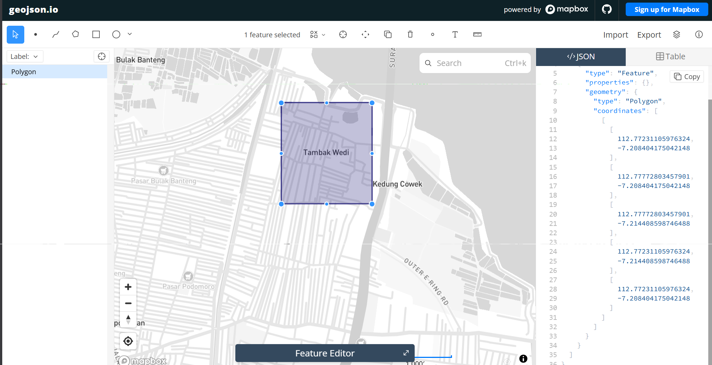
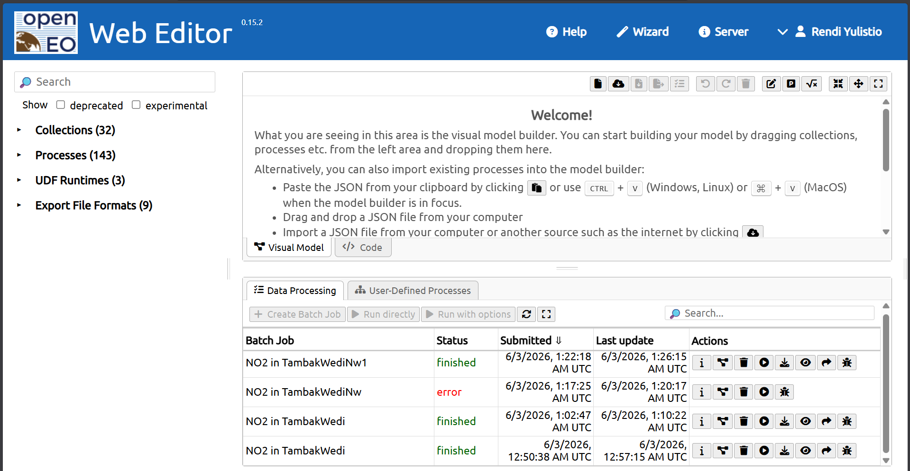
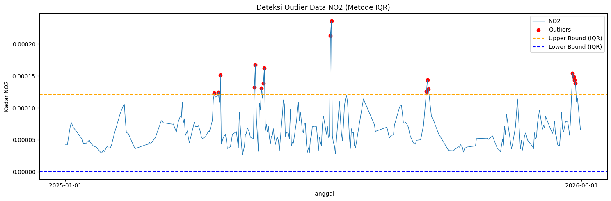
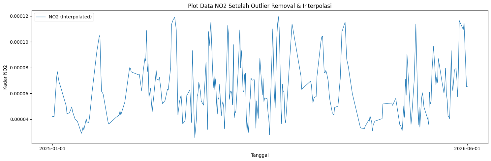
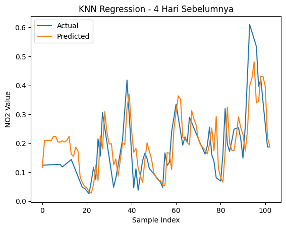
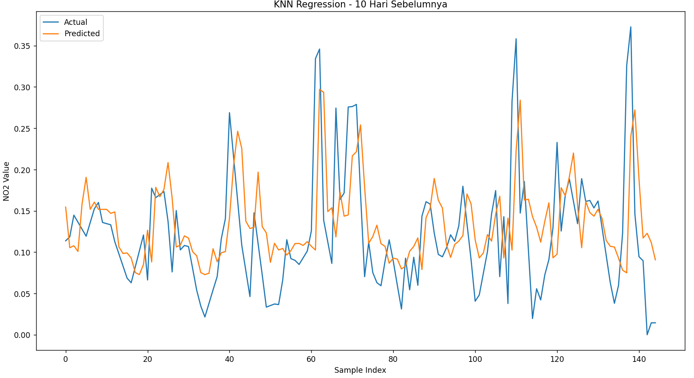

Peramalan kadar \(NO_2\) di daerah Tambak Wedi Surabaya#
Latar Belakang#
Peningkatan aktivitas industri, transportasi, serta pertumbuhan populasi yang pesat telah menyebabkan peningkatan signifikan terhadap tingkat pencemaran udara di berbagai wilayah. Salah satu polutan udara utama yang menjadi perhatian adalah Nitrogen Dioksida (NO₂), yaitu gas beracun yang dihasilkan terutama dari proses pembakaran bahan bakar fosil seperti kendaraan bermotor, pembangkit listrik, dan kegiatan industri. NO₂ memiliki dampak serius terhadap kesehatan manusia, seperti gangguan pernapasan, iritasi paru-paru, serta memperburuk penyakit asma dan bronkitis. Selain itu, NO₂ juga berkontribusi terhadap pembentukan hujan asam dan penurunan kualitas lingkungan secara keseluruhan.
1. Pengumpulan Data#
Pertama kita akan mengumpulkan data Time Series Harian kadar NO2 di daerah Bangkalan. Pengumpulan data dari sumber website https://dataspace.copernicus.eu/ , buat akun terlebih dahulu di website copernicus tersebut.
Dokumentasi cara pengambilan data di https://documentation.dataspace.copernicus.eu/notebook-samples/openeo/NO2Covid.html .
Untuk menuliskan code Python untuk mengambil data, silahkan kunjungi halaman https://dataspace.copernicus.eu/analyse/jupyterlab, klik Access JupyterLab, scroll kebawah sedikit …, lalu pilih Python 3 (ipykernel)

Disini kita akan mengambil data kadar NO2 di daerah Bangkalan dari tanggal … sampai … .
Kita install terlebih dahulu openoneo:
pip install openeo
Lalu tuliskan code dibawah:
import openeo
connection = openeo.connect("openeo.dataspace.copernicus.eu").authenticate_oidc()
pada saat menjalankan baris code diatas (connection), nanti akan diminta authentikasi seperti output berikut:
Terminal/Output
Visit (link authentikasi) 📋 to authenticate.
✅ Authorized successfully
Authenticated using device code flow.
Kalian tinggal klik link authentikasi lalu login menggunakan akun “copernicus” kalian.
aoi = {
"type": "Polygon",
"coordinates": [
[
[112.77, -7.20],
[112.77, -7.20],
[112.77, -7.21],
[112.77, -7.21],
[112.77, -7.20],
]
]
}
s5post = connection.load_collection(
"SENTINEL_5P_L2",
temporal_extent=["2025-01-01", "2026-06-01"],
spatial_extent={
"west": 112.55, # Batas Barat
"south": -7.25, # Batas Selatan
"east": 112.68, # Batas Timur
"north": -7.10 # Batas Utara
},
bands=["NO2"],
)
# Now aggregate by day to avoid having multiple data per day
s5p_no2_daily = s5post.aggregate_temporal_period(reducer="mean", period="day")
# Now create a spatial aggregation to generate mean timeseries data
s5p_no2_aoi = s5p_no2_daily.aggregate_spatial(reducer="mean", geometries=aoi)
Code diatas memerlukan titik koordinasi area yang akan diambil data \(NO_2\)-nya, untuk mengambil titik koordinasi kaian kunjungi webiste https://geojson.io/#map=14.8/-7.04732/112.69463 . Didalam website tersebut kalian akan memilih daerah dengan cara memberi shape kotak didaerah yang ingin kalian ambil datanya.

Di panel sebelah kanan terdapat data JSON yang berupa koordinat daerah yang kalian pilih, kalian salin terus sesuaikan dengan code diatas di bagian variabel “aoi” dan spatial_extent.
Lalu kalian tambahkan baris code dibawah untuk memulai pengambilan data:
job = s5post.execute_batch(title="NO2 in TambakWediNw1", outputfile="NO2TambakWediNw1.nc")
Tunggu proses pengambilan data, output proses seperti berikut:
0:00:00 Job 'j-260603012218451e82cb164a1854d284': send 'start'
0:00:08 Job 'j-260603012218451e82cb164a1854d284': created (progress 0%)
0:00:13 Job 'j-260603012218451e82cb164a1854d284': queued (progress 0%)
0:00:20 Job 'j-260603012218451e82cb164a1854d284': queued (progress 0%)
0:00:28 Job 'j-260603012218451e82cb164a1854d284': queued (progress 0%)
0:00:38 Job 'j-260603012218451e82cb164a1854d284': queued (progress 0%)
0:00:51 Job 'j-260603012218451e82cb164a1854d284': queued (progress 0%)
0:01:06 Job 'j-260603012218451e82cb164a1854d284': running (progress N/A)
0:01:26 Job 'j-260603012218451e82cb164a1854d284': running (progress N/A)
0:01:50 Job 'j-260603012218451e82cb164a1854d284': running (progress N/A)
0:02:20 Job 'j-260603012218451e82cb164a1854d284': running (progress N/A)
0:02:57 Job 'j-260603012218451e82cb164a1854d284': running (progress N/A)
0:03:44 Job 'j-260603012218451e82cb164a1854d284': running (progress N/A)
0:04:43 Job 'j-260603012218451e82cb164a1854d284': finished (progress 100%)
Abaikan ketika ada N/A.
Ketika proses pengambilan data, aktivitas kalian akan terekam di halaman https://editor.openeo.org/?server=https%3A%2F%2Fopeneo.dataspace.copernicus.eu%2Fopeneo%2F1.2 . Disitu terdapat nama dataset dan status pengambilan data.

2. Preproccessing Data#
Setelah kita mengambil data, data bisa diunduh di halaman https://editor.openeo.org/?server=https%3A%2F%2Fopeneo.dataspace.copernicus.eu%2Fopeneo%2F1.2 . File akan berbentuk .nc. Kita cuman perlu kolom date dan NO2 menggunakan code dibawah:
import netCDF4
file_path = "NO2TambakWediNw1.nc"
ds = netCDF4.Dataset(file_path)
# Lihat seluruh variabel yang tersedia
print("📦 Variabel dalam file:")
print(ds.variables.keys())
# dict_keys(['t', 'x', 'y', 'crs', 'NO2'])
# Ambil NO2
no2 = ds.variables["NO2"][:]
# Ambil Time
time = ds.variables["t"][:]
# Konversi waktu ke format tanggal jika punya atribut 'units'
try:
time_units = ds.variables["t"].units
dates = netCDF4.num2date(time, units=time_units)
except Exception:
dates = time # fallback kalau tidak ada units
# Tampilkan struktur data NO2
print(type(no2))
# type <class 'numpy.ma.core.MaskedArray'>
print(len(no2))
# banyaknya data record NO2 725
print(len(no2[0]))
# panjang data perbaris 9
print(len(no2[0][0]))
# panjang perdata 8
print(no2[0][0][0])
# 3.7701793e-05
Untuk melihat 10 data pertama adalah:
print("Contoh data pertama:")
for i in range(0, 10):
print(no2[i])
a. Mengatasi Missing Value menggunakan metode Interpolasi Linear#
Sekarang kita akan mengatasi permasalahan missing value pada data NO2.
import numpy as np
import pandas as pd
# Interpolasi Linear
no2_filled = np.zeros_like(no2)
# Untuk jaga-jaga jika terdapat '--' tidak berubah menjadi 0
no2_filled = no2_filled.filled(0)
# loop tiap grid (y,x)
for i in range(no2.shape[1]): # 9 baris
for j in range(no2.shape[2]): # 8 kolom
series = pd.Series(no2[:, i, j])
no2_filled[:, i, j] = series.interpolate(method='linear', limit_direction='both').to_numpy()
Dengan code diatas, missing value yang terdapat pada data NO2 akan diisi secara otomatis menggunakan metode Interpolasi Linear.
b. Rata-rata kan Data dan ubah Datetime#
Setelah mengatasi missing value, kita akan me-rata-rata-kan data NO2 agar satu record hanya berupa single value. Sekalian kita mengambil date nya dan menaruh di array. Kita akan mengubah datetime dari awalnya (2023-10-04 00:00:00) menjadi (2023-10-04) karena kita mengambil data time series harian jadi kita tidak memerlukan data jam, menit dan detik.
new_dates = []
new_no2 = []
for i in range(len(dates)):
# ubah format datetime
new_date = dates[i].strftime('%Y-%m-%d')
new_dates.append(new_date)
new_no2.append(np.mean(no2_filled[i]))
c. Simpan data dalam bentuk CSV#
Setelah itu kita akan membentuk data menjadi DataFrame Pandas untuk disimpan menjadi CSV.
df = pd.DataFrame({
"date": dates,
"NO2": new_no2
})
# Simpan ke CSV
df.to_csv("NO2_TambakWediNw1.csv", index=False)
Untuk mengatasi missing value dan menyimpan data ke CSV sudah berhasil.
d. Pengecekan Missing Value data harian pada CSV#
Sekarang setelah data berbentuk CSV, kita cek apakah data Time Series harian lengkap. Cara men-cek apakah data Time Series Harian lengkap gunakan code dibawah:
import pandas as pd
import numpy as np
df = pd.read_csv("NO2_TambakWediNw1.csv")
# Pastikan kolom 'date' bertipe datetime
df['date'] = pd.to_datetime(df['date'])
# Buat rentang tanggal lengkap
start_date = "2025-01-01"
end_date = "2026-06-01"
full_range = pd.date_range(start=start_date, end=end_date, freq='D')
# Cek tanggal yang hilang
missing_dates = full_range.difference(df['date'])
print(f"Jumlah hari missing: {len(missing_dates)}")
print("Daftar tanggal missing:")
print(missing_dates)
Jumlah hari missing: 4
Daftar tanggal missing:
DatetimeIndex(['2025-01-30', '2025-01-31', '2026-02-24', '2026-06-01'], dtype='datetime64[ns]', freq=None)
Dalam kasus saya ini, terdapat 6 hari missing value. Kita akan mengatasi lagi missing value menggunakan metode Interpolasi Linear. Cara memperbaikinya gunakan code dibawah:
import pandas as pd
# Pastikan datetime dan sorting
df['date'] = pd.to_datetime(df['date'])
df = df.sort_values('date')
# Buat rentang tanggal lengkap
full_range = pd.date_range(start="2025-01-01", end="2026-06-01", freq='D')
# Reindex agar tanggal yang hilang muncul sebagai NaN
df = df.set_index('date').reindex(full_range)
df.index.name = 'date'
# Interpolasi linear berdasarkan indeks waktu
df['NO2'] = df['NO2'].interpolate(method='time')
# (Opsional) jika masih ada NaN di bagian awal/akhir bisa gunakan forward/backward fill
df['NO2'] = df['NO2'].fillna(method='bfill').fillna(method='ffill')
# Simpan kembali ke CSV
df.to_csv("no2_timeseries_interpolated.csv")
Setelah saya cek missing value harian, sudah tidak ada lagi missing value.
Jumlah hari missing: 0
Daftar tanggal missing:
DatetimeIndex([], dtype='datetime64[ns]', freq='D')
dengan bentuk data terdapat 2 kolom, kolom pertama yaitu date atau tanggal, kolom kedua yaitu kadar NO2 yang sudah di rata-rata kan.
Jumlah Outlier (IQR): 17
date NO2
149 2025-05-30 0.000123
153 2025-06-03 0.000124
155 2025-06-05 0.000152
189 2025-07-09 0.000132
190 2025-07-10 0.000168
e. Deteksi Outlier IQR#
Setelah kita mengisi missing value menggunakan metode Interpolasi Linear, selanjutnya kita akan mendeteksi Outlier menggunakan metode IQR.
import pandas as pd
import numpy as np
import matplotlib.pyplot as plt
df = pd.read_csv("no2_timeseries_interpolated.csv")
df['date'] = pd.to_datetime(df['date'])
# Hitung IQR
Q1 = df['NO2'].quantile(0.25)
Q3 = df['NO2'].quantile(0.75)
IQR = Q3 - Q1
lower_bound = Q1 - 1.5 * IQR
upper_bound = Q3 + 1.5 * IQR
# Filter outlier
outliers_iqr = df[(df['NO2'] < lower_bound) | (df['NO2'] > upper_bound)]
print("Jumlah Outlier (IQR):", len(outliers_iqr))
print(outliers_iqr[['date', 'NO2']].head())
Untuk men-visualisasi outlier:
# === Visualisasi ===
plt.figure(figsize=(15,5))
plt.plot(df['date'], df['NO2'], label="NO2", linewidth=1)
# Titik Outlier
plt.scatter(outliers_iqr['date'], outliers_iqr['NO2'],
color='red', marker='o', label="Outliers")
# Garis batas atas & bawah
plt.axhline(upper_bound, color='orange', linestyle='dashed', label="Upper Bound (IQR)")
plt.axhline(lower_bound, color='blue', linestyle='dashed', label="Lower Bound (IQR)")
plt.title("Deteksi Outlier Data NO2 (Metode IQR)")
plt.xlabel("Tanggal")
plt.ylabel("Kadar NO2")
plt.legend()
plt.tight_layout()
plt.xticks(
ticks=[df['date'].iloc[0], df['date'].iloc[-1]],
labels=[df['date'].iloc[0].strftime('%Y-%m-%d'),
df['date'].iloc[-1].strftime('%Y-%m-%d')]
)
plt.show()

Setelah itu, kita akan menghapus data outlier. Karena data ini merupakan data Time Series, maka data outlier yang dihapus akan diisi kembali menggunakan Interpolasi Linear.
# Tandai outlier menjadi NaN
df['NO2_cleaned'] = df['NO2'].mask((df['NO2'] < lower_bound) | (df['NO2'] > upper_bound))
print("Jumlah nilai yang dinyatakan sebagai outlier:", df['NO2_cleaned'].isna().sum())
# Interpolasi linear untuk mengisi kembali nilai outlier
df['NO2_filled'] = df['NO2_cleaned'].interpolate(method='linear')
# Jika masih tersisa NaN di ujung data, isi dengan forward/backward fill
df['NO2_filled'] = df['NO2_filled'].bfill().ffill()
# df['NO2_filled'] = df['NO2_filled'].fillna(method='bfill').fillna(method='ffill')
print("Jumlah missing setelah interpolasi:", df['NO2_filled'].isna().sum())
Visualisasi data setelah menghapus Outlier dan mengisi kembali menggunakan Interpolasi Linear:
plt.figure(figsize=(15,5))
# Plot data hasil interpolasi
plt.plot(df['date'], df['NO2_filled'], label="NO2 (Interpolated)", linewidth=1)
# Tampilkan hanya tanggal awal dan akhir di sumbu X
plt.xticks(
ticks=[df['date'].iloc[0], df['date'].iloc[-1]],
labels=[df['date'].iloc[0].strftime('%Y-%m-%d'),
df['date'].iloc[-1].strftime('%Y-%m-%d')]
)
plt.title("Plot Data NO2 Setelah Outlier Removal & Interpolasi")
plt.xlabel("Tanggal")
plt.ylabel("Kadar NO2")
plt.legend()
plt.tight_layout()
plt.show()

3. Modeling menggunakan KNN Regression#
Dengan data Time Series kadar NO2 harian di daerah Bangkalan, kita akan memprediksi kadar NO2 satu hari yang akan datang. Sekarang kita akan ubah data, mencoba mencari korelasi antara 1 hari dengan 4 hari sebelumnya. Kita juga akan membandingkan apakah semakin banyak hari sebelumnya, model akan lebih bagus?
a. Uji Korelasi Data#
Sebelum masuk ke modeling, data kita merupakan data unsupervised yang berarti tidak ada label. Kita ubah data menjadi supervised lalu uji korelasi terhadap label (t). Fitur-fitur nya merupakan 30 hari sebelum (t-30, t-29, … t-1) dan label (t).
import pandas as pd
def create_supervised(data, n_lag=4):
df_supervised = pd.DataFrame()
# Membuat fitur t-4 sampai t-1
for i in range(n_lag, 0, -1):
df_supervised[f'NO2(t-{i})'] = data.shift(i)
# Label hari H
df_supervised['NO2(t)'] = data
# Hapus baris yang masih mengandung NaN akibat shift
df_supervised.dropna(inplace=True)
return df_supervised
# contoh penggunaan
supervised_df30 = create_supervised(df['NO2'], n_lag=7)
# Ambil semua lag dan kolom target
lag_cols = supervised_df30.drop(columns="NO2(t)").columns
correlations = supervised_df30[lag_cols].corrwith(supervised_df30['NO2(t)'])
# Tampilkan nilai korelasi
print(correlations)
NO2(t-7) 0.233483
NO2(t-6) 0.235551
NO2(t-5) 0.262124
NO2(t-4) 0.317750
NO2(t-3) 0.401963
NO2(t-2) 0.537688
NO2(t-1) 0.765164
dtype: float64
b. Normalisasi Data#
karena kita menggunakan model KNN Regression, maka perlu normalisasi data menggunakan min-max Scaler.
from sklearn.preprocessing import MinMaxScaler
import pandas as pd
scaler = MinMaxScaler()
df['NO2_scaled'] = scaler.fit_transform(df[['NO2']])
c. Mengubah Data#
Sekarang saya ingin mengubah data dari sebelumnya hanya 2 fitru menjadi 4 hari sebelum yang terdapat 5 fitur (t-4, t-3, t-2, t-1, dan t sebagai label) karena dari uji korelasi, keempat fitur tersebut (t-1 sampai t-4) merupakan nilai uji korelasi terbaik (lebih dari 0.5). Saya juga membuat data 10 hari sebelum untuk membandingkan apakah semakin banyak hari sebelum, semakin baik pula modelnya?
supervised_df = create_supervised(df['NO2_scaled'], n_lag=4)
print(supervised_df)
print(supervised_df.shape)
output/terminal
NO2(t-4) NO2(t-3) NO2(t-2) NO2(t-1) NO2(t)
4 0.238203 0.192840 0.196854 0.149560 0.154247
5 0.192840 0.196854 0.149560 0.154247 0.185625
6 0.196854 0.149560 0.154247 0.185625 0.152010
7 0.149560 0.154247 0.185625 0.152010 0.149143
8 0.154247 0.185625 0.152010 0.149143 0.159907
.. ... ... ... ... ...
726 0.123092 0.325742 0.372653 0.145997 0.094458
727 0.325742 0.372653 0.145997 0.094458 0.089599
728 0.372653 0.145997 0.094458 0.089599 0.000000
729 0.145997 0.094458 0.089599 0.000000 0.014405
730 0.094458 0.089599 0.000000 0.014405 0.014405
[727 rows x 5 columns]
(727, 5)
Untuk membuat data 10 hari sebelum tinggal tambah code dibawah (ubah parameter n_lag).
supervised_df10 = create_supervised(df['NO2_scaled'], n_lag=10)
print(supervised_df10)
print(supervised_df10.shape)
output/terminal
NO2(t-10) NO2(t-9) NO2(t-8) NO2(t-7) NO2(t-6) NO2(t-5) \
date
2025-01-11 0.077232 0.077232 0.077232 0.123908 0.170585 0.217261
2025-01-12 0.077232 0.077232 0.123908 0.170585 0.217261 0.242292
2025-01-13 0.077232 0.123908 0.170585 0.217261 0.242292 0.224164
2025-01-14 0.123908 0.170585 0.217261 0.242292 0.224164 0.206036
2025-01-15 0.170585 0.217261 0.242292 0.224164 0.206036 0.196723
... ... ... ... ... ... ...
2026-05-28 0.253693 0.214549 0.148676 0.255718 0.430232 0.609673
2026-05-29 0.214549 0.148676 0.255718 0.430232 0.609673 0.584582
2026-05-30 0.148676 0.255718 0.430232 0.609673 0.584582 0.559491
2026-05-31 0.255718 0.430232 0.609673 0.584582 0.559491 0.534399
2026-06-01 0.430232 0.609673 0.584582 0.559491 0.534399 0.396782
NO2(t-4) NO2(t-3) NO2(t-2) NO2(t-1) NO2(t)
date
2025-01-11 0.242292 0.224164 0.206036 0.196723 0.187411
2025-01-12 0.224164 0.206036 0.196723 0.187411 0.177300
2025-01-13 0.206036 0.196723 0.187411 0.177300 0.167189
2025-01-14 0.196723 0.187411 0.177300 0.167189 0.157079
2025-01-15 0.187411 0.177300 0.167189 0.157079 0.146968
... ... ... ... ... ...
2026-05-28 0.584582 0.559491 0.534399 0.396782 0.420321
2026-05-29 0.559491 0.534399 0.396782 0.420321 0.342529
2026-05-30 0.534399 0.396782 0.420321 0.342529 0.264736
2026-05-31 0.396782 0.420321 0.342529 0.264736 0.186944
2026-06-01 0.420321 0.342529 0.264736 0.186944 0.186944
[507 rows x 11 columns]
(507, 11)
d. Modeling dan Evaluation#
Sekarang dari 2 data yang sudah kita rubah, kita train menggunakan model KNN Regression.
from sklearn.neighbors import KNeighborsRegressor
from sklearn.model_selection import train_test_split
from sklearn.metrics import mean_squared_error, r2_score
import numpy as np
def MAPE(y_true, y_pred):
y_true, y_pred = np.array(y_true), np.array(y_pred)
# Hindari pembagian dengan nol
nonzero = y_true != 0
return np.mean(np.abs((y_true[nonzero] - y_pred[nonzero]) / y_true[nonzero])) * 100
def train_knn(df_supervised, model_name=""):
# Pisahkan fitur & label
X = df_supervised.drop(columns=['NO2(t)']).values
y = df_supervised['NO2(t)'].values
# Split data 80/20
X_train, X_test, y_train, y_test = train_test_split(
X, y, test_size=0.2, shuffle=False
)
# Model KNN
knn = KNeighborsRegressor(n_neighbors=5)
knn.fit(X_train, y_train)
# Prediksi
y_pred = knn.predict(X_test)
# Evaluasi
mse = mean_squared_error(y_test, y_pred)
rmse = np.sqrt(mse)
r2 = r2_score(y_test, y_pred)
mape = MAPE(y_test, y_pred)
print(f"\n=== {model_name} ===")
print(f"Train Size: {len(X_train)} — Test Size: {len(X_test)}")
print(f"RMSE: {rmse:.6f}")
print(f"R² Score: {r2:.4f}")
print(f"MAPE: {mape:.4f}%")
return knn, y_test, y_pred
# Train model untuk 4 hari sebelumnya
knn_4, y_test_4, y_pred_4 = train_knn(supervised_df, "KNN - 4 Hari Sebelumnya")
# Train model untuk 10 hari sebelumnya
knn_10, y_test_10, y_pred_10 = train_knn(supervised_df10, "KNN - 10 Hari Sebelumnya")
=== KNN - 4 Hari Sebelumnya ===
Train Size: 410 — Test Size: 103
RMSE: 0.078652
R² Score: 0.5586
MAPE: 41.9674%
=== KNN - 10 Hari Sebelumnya ===
Train Size: 405 — Test Size: 102
RMSE: 0.079064
R² Score: 0.5571
MAPE: 42.9653%
e. Plotting#
Plotting untuk visualisasi grafik antara label dan prediksi dari kedua data diatas.
4 hari sebelum:
import matplotlib.pyplot as plt
import numpy as np
plt.figure()
plt.plot(np.arange(len(y_test_4)), y_test_4, label="Actual")
plt.plot(np.arange(len(y_pred_4)), y_pred_4, label="Predicted")
plt.title("KNN Regression - 4 Hari Sebelumnya")
plt.xlabel("Sample Index")
plt.ylabel("NO2 Value")
plt.legend()
plt.show()

10 hari sebelum:
plt.figure()
plt.plot(np.arange(len(y_test_10)), y_test_10, label="Actual")
plt.plot(np.arange(len(y_pred_10)), y_pred_10, label="Predicted")
plt.title("KNN Regression - 10 Hari Sebelumnya")
plt.xlabel("Sample Index")
plt.ylabel("NO2 Value")
plt.legend()
plt.show()

30 hari sebelum:
plt.figure()
plt.plot(np.arange(len(y_test_30)), y_test_30, label="Actual")
plt.plot(np.arange(len(y_pred_30)), y_pred_30, label="Predicted")
plt.title("KNN Regression - 30 Hari Sebelumnya")
plt.xlabel("Sample Index")
plt.ylabel("NO2 Value")
plt.legend()
plt.show()

Hasil evaluasi model KNN Regression menunjukkan bahwa peningkatan jumlah fitur historis (lag) tidak serta merta meningkatkan performa prediksi. Pada model dengan 4 hari sebelumnya, nilai RMSE paling kecil dan R² masih positif sehingga model mampu menjelaskan sebagian kecil variabilitas data target. Namun, ketika jumlah lag ditambah menjadi 10 dan 30 hari sebelumnya, performa model justru menurun yang ditunjukkan oleh meningkatnya nilai RMSE dan MAPE, serta penurunan nilai R² hingga bernilai negatif pada lag 30. Nilai MAPE yang cukup tinggi pada seluruh model (lebih dari 60%) juga mengindikasikan bahwa akurasi prediksi masih rendah dan terdapat deviasi besar antara nilai prediksi dan nilai aktual. Secara keseluruhan, model KNN tidak memberikan performa yang baik pada data ini, dan penambahan fitur historis justru menyebabkan overfitting serta menurunkan kemampuan generalisasi model. Oleh karena itu, diperlukan pemilihan model lain atau peningkatan strategi preprocessing untuk memperoleh hasil prediksi yang lebih baik.